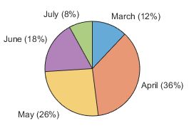
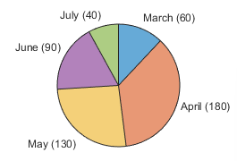
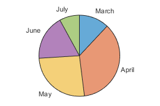
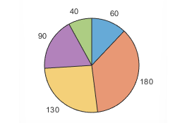
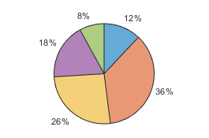
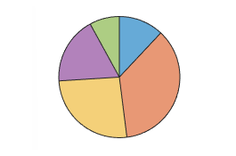
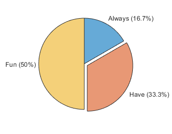
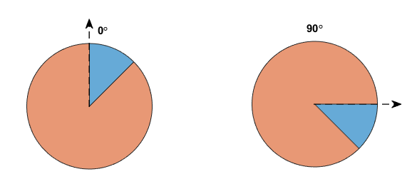
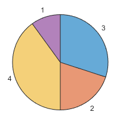
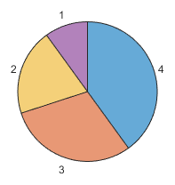

PieChart Properties
PieChart properties control the appearance and
behavior pie charts. By changing property values, you can modify certain aspects of these
charts. Use dot notation to query and set properties.
p = piechart([1 2 3 4]); p.Names = ["Apple","Peach","Pizza","Pumpkin"];
Labels
Chart title, specified as a string vector, character vector, cell array of character vectors, or categorical array. To create a multiline title, specify a string vector or cell array of character vectors. Each element in the array is a separate line of text.
Alternatively, you can call the title function to add a title to the
chart.
piechart([1 2 3 4])
title("My Pie Chart")Slice labels, specified as a string vector or cell array of character vectors that has one value per slice.
Set this property if you want to change the labels that appear by default. The default labels might include the slice names depending on how you create your chart:
If you create the chart with numeric or duration data without specifying the slice names, MATLAB® assigns a default set of names to the
Namesproperty. However, the labels do not include those names. If you set theNamesproperty explicitly, then the slice labels include the names.If you create the chart with categorical data, then the
Namesproperty contains the category names, and the slice labels include those names.If you create the chart with a table and specify a variable containing the names, then the
Namesproperty contains the names from that variable, and the slice labels include those names.
How the slices are labeled, specified as "auto" or
"manual".
"auto"— Create and update the slice labels based on theProportionsandNamesproperties. If either of those properties change, the labels automatically update."manual"— Do not update the labels. When you set theLabelsproperty, theLabelsModeproperty automatically changes to"manual".
Since R2024a
Label style, specified as one of the values in the table. When changing between
different label styles, you might need to resize the figure to maintain the same size
pie chart. Setting this property has no effect if the LabelsMode
property is set to "manual".
| Value | Description | Example |
|---|---|---|
| Display the |

|
| Display the |

|
| Display the |

|
| Display the |

|
| Display the |

|
| Do not display any labels. |

|
Since R2024a
How the label style is selected, specified as "auto" or
"manual".
"auto"— MATLAB selects the label style based on your data (numeric or categorical) and the value of theNamesModeproperty."manual"— You specify the label style by setting theLabelStyleproperty.
Legend visibility, specified as "on" or "off",
or as numeric or logical 1 (true) or
0 (false). A value of "on"
is equivalent to true, and "off" is equivalent to
false. Thus, you can use the value of this property as a logical
value. The value is stored as an on/off logical value of type matlab.lang.OnOffSwitchState.
When you set this property to "on", the legend is visible in the
chart.
Legend title, specified as a string, character vector, cell array of character vectors, or categorical array. To create a multiline title, specify a string array or cell array of character vectors. Each element in the array is a separate line of text.
Text interpreter, specified as one of these values:
"tex"— Interpret characters using a subset of TeX markup."latex"— Interpret characters using LaTeX markup."none"— Display literal characters.
MATLAB uses the interpreter when displaying a chart title, axis labels, or any data that includes text or symbols.
TeX Markup
By default, MATLAB supports a subset of TeX markup. Use TeX markup to add superscripts and subscripts, modify the font type and color, and include special characters in the text.
Modifiers remain in effect until the end of the text.
Superscripts and subscripts are an exception because they modify only the next character or the
characters within the curly braces. When you set the interpreter to "tex",
the supported modifiers are as follows.
| Modifier | Description | Example |
|---|---|---|
^{ } | Superscript | "text^{superscript}" |
_{ } | Subscript | "text_{subscript}" |
\bf | Bold font | "\bf text" |
\it | Italic font | "\it text" |
\sl | Oblique font (usually the same as italic font) | "\sl text" |
\rm | Normal font | "\rm text" |
\fontname{ | Font name — Replace
| "\fontname{Courier} text" |
\fontsize{ | Font size —Replace
| "\fontsize{15} text" |
\color{ | Font color — Replace
red, green,
yellow, magenta,
blue, black,
white, gray,
darkGreen, orange, or
lightBlue. | "\color{magenta} text" |
\color[rgb]{specifier} | Custom font color — Replace
| "\color[rgb]{0,0.5,0.5} text" |
This table lists the supported special characters for the
"tex" interpreter.
| Character Sequence | Symbol | Character Sequence | Symbol | Character Sequence | Symbol |
|---|---|---|---|---|---|
| α |
| υ |
| ~ |
| ∠ |
| ϕ |
| ≤ |
|
|
| χ |
| ∞ |
| β |
| ψ |
| ♣ |
| γ |
| ω |
| ♦ |
| δ |
| Γ |
| ♥ |
| ϵ |
| Δ |
| ♠ |
| ζ |
| Θ |
| ↔ |
| η |
| Λ |
| ← |
| θ |
| Ξ |
| ⇐ |
| ϑ |
| Π |
| ↑ |
| ι |
| Σ |
| → |
| κ |
| ϒ |
| ⇒ |
| λ |
| Φ |
| ↓ |
| µ |
| Ψ |
| º |
| ν |
| Ω |
| ± |
| ξ |
| ∀ |
| ≥ |
| π |
| ∃ |
| ∝ |
| ρ |
| ∍ |
| ∂ |
| σ |
| ≅ |
| • |
| ς |
| ≈ |
| ÷ |
| τ |
| ℜ |
| ≠ |
| ≡ |
| ⊕ |
| ℵ |
| ℑ |
| ∪ |
| ℘ |
| ⊗ |
| ⊆ |
| ∅ |
| ∩ |
| ∈ |
| ⊇ |
| ⊃ |
| ⌈ |
| ⊂ |
| ∫ |
| · |
| ο |
| ⌋ |
| ¬ |
| ∇ |
| ⌊ |
| x |
| ... |
| ⊥ |
| √ |
| ´ |
| ∧ |
| ϖ |
| ∅ |
| ⌉ |
| 〉 |
| | |
| ∨ |
| 〈 |
| © |
LaTeX Markup
To use LaTeX markup, set the interpreter to "latex". For inline mode, surround the markup with single dollar signs ($). For display mode, surround the markup with double dollar signs ($$).
| LaTeX Mode | Example | Result |
|---|---|---|
| Inline | "$\int_1^{20} x^2 dx$" |
|
| Display | "$$\int_1^{20} x^2 dx$$" |
|


The displayed text uses the default LaTeX font style. To change the font style, use LaTeX markup.
The maximum size of the text that you can use with the LaTeX interpreter is 1200 characters. For multiline text, this reduces by about 10 characters per line.
MATLAB supports most standard LaTeX math mode commands. For more information, see Supported LaTeX Commands. For examples that use TeX and LaTeX, see Greek Letters and Special Characters in Chart Text.
Color and Styling
Color order, specified as a three-column matrix of RGB triplets. This property defines the palette of colors MATLAB uses to create the chart. Each row of the matrix is an RGB triplet. An RGB triplet is a three-element vector whose elements specify the intensities of the red, green, and blue components of a color. The intensities must be in the range [0, 1].
This table lists the default color palettes for plots in the light and dark themes.
| Palette | Palette Colors |
|---|---|
Before R2025a: Most plots use these colors by default. |
|
|
|
You can get the RGB triplets and hexadecimal color codes for these palettes using the orderedcolors and rgb2hex functions. For example, get the RGB triplets for the "gem" palette and convert them to hexadecimal color codes.
RGB = orderedcolors("gem");
H = rgb2hex(RGB);Before R2023b: Get the RGB triplets using RGB =
get(groot,"FactoryAxesColorOrder").
Before R2024a: Get the hexadecimal color codes using H =
compose("#%02X%02X%02X",round(RGB*255)).
Note
You can set this property to one of several predefined color palettes by passing
the PieChart object to the colororder function.
Slice colors, specified as a value from this table.
FaceColor Value | Description |
|---|---|
"flat" | Let MATLAB assign a different color to each slice. The colors are defined in the |
| RGB triplet or hexadecimal color code | Assign one custom color to all the slices:
The two tables below provide the RGB triplets and hexadecimal color codes for some common colors. |
| Color name or short name | Assign one named color to all the slices using a color name such as The table below lists the available color names and short names. |
"none" | Display all the slices without any color. |
This table lists the available color names and short names with corresponding RGB triplets and hexadecimal color codes.
| Color Name | Short Name | RGB Triplet | Hexadecimal Color Code | Appearance |
|---|---|---|---|---|
"red" | "r" | [1 0 0] | "#FF0000" |
|
"green" | "g" | [0 1 0] | "#00FF00" |
|
"blue" | "b" | [0 0 1] | "#0000FF" |
|
"cyan"
| "c" | [0 1 1] | "#00FFFF" |
|
"magenta" | "m" | [1 0 1] | "#FF00FF" |
|
"yellow" | "y" | [1 1 0] | "#FFFF00" |
|
"black" | "k" | [0 0 0] | "#000000" |
|
"white" | "w" | [1 1 1] | "#FFFFFF" |
|
This table lists the default color palettes for plots in the light and dark themes.
| Palette | Palette Colors |
|---|---|
Before R2025a: Most plots use these colors by default. |
|
|
|
You can get the RGB triplets and hexadecimal color codes for these palettes using the orderedcolors and rgb2hex functions. For example, get the RGB triplets for the "gem" palette and convert them to hexadecimal color codes.
RGB = orderedcolors("gem");
H = rgb2hex(RGB);Before R2023b: Get the RGB triplets using RGB =
get(groot,"FactoryAxesColorOrder").
Before R2024a: Get the hexadecimal color codes using H =
compose("#%02X%02X%02X",round(RGB*255)).
Slice outline color, specified as a value from this table.
EdgeColor Value | Description |
|---|---|
"flat" | Let MATLAB assign a different outline color to each slice.
The colors are defined in the |
| RGB triplet or hexadecimal color code | Assign one custom outline color to all the slices:
The two tables below provide the RGB triplets and hexadecimal color codes for some common colors. |
| Color name or short name | Assign one named outline color to all the slices using a color name such as
The table below lists the available color names and short names. |
"none" | Display the chart without any outline color. |
This table lists the available color names and short names with corresponding RGB triplets and hexadecimal color codes.
| Color Name | Short Name | RGB Triplet | Hexadecimal Color Code | Appearance |
|---|---|---|---|---|
"red" | "r" | [1 0 0] | "#FF0000" |
|
"green" | "g" | [0 1 0] | "#00FF00" |
|
"blue" | "b" | [0 0 1] | "#0000FF" |
|
"cyan"
| "c" | [0 1 1] | "#00FFFF" |
|
"magenta" | "m" | [1 0 1] | "#FF00FF" |
|
"yellow" | "y" | [1 1 0] | "#FFFF00" |
|
"black" | "k" | [0 0 0] | "#000000" |
|
"white" | "w" | [1 1 1] | "#FFFFFF" |
|
This table lists the default color palettes for plots in the light and dark themes.
| Palette | Palette Colors |
|---|---|
Before R2025a: Most plots use these colors by default. |
|
|
|
You can get the RGB triplets and hexadecimal color codes for these palettes using the orderedcolors and rgb2hex functions. For example, get the RGB triplets for the "gem" palette and convert them to hexadecimal color codes.
RGB = orderedcolors("gem");
H = rgb2hex(RGB);Before R2023b: Get the RGB triplets using RGB =
get(groot,"FactoryAxesColorOrder").
Before R2024a: Get the hexadecimal color codes using H =
compose("#%02X%02X%02X",round(RGB*255)).
Slice fill color transparency, specified as a scalar in the range [0,1]. A
value of 1 makes the slices opaque, and 0 makes
them completely transparent. Values between 0 and
1 make the slices partially transparent.
Thickness of slice outlines, specified as a positive value in points.
Offset slices, specified as a numeric or logical vector for numeric data. If you create the chart using categorical data, you can specify a string vector or a character vector containing one or more category names. The orange slice in this pie chart is offset.

Example: piechart([5 7 4 6],ExplodedWedges=3) creates a pie chart
with the third slice offset.
Example: piechart([5 7 4 6],ExplodedWedges=[1 3]) creates a pie
chart with the first and third slice offset.
Example: piechart([5 7 4 6],ExplodedWedges=[false false true false])
creates a pie chart with the third slice offset.
Example: piechart(categorical(["A" "B" "C" "D"]),ExplodedWedges="B")
creates a pie chart using categorical data with slice B
offset.
Direction for adding slices, specified as "clockwise" or "counterclockwise".
"clockwise"— Add slices in a clockwise direction."counterclockwise"— Add slices in a counterclockwise direction.
Data Display
This property is read-only.
Category counts when you specify categorical data, returned as a numeric vector. The number of elements in the vector is the number of categories in your data. Each element of the vector contains the number of instances of a category.
Starting angle of the first slice, specified as a scalar value in degrees. By default,
the starting angle is 0 degrees. Positive values rotate the slices in
a clockwise direction. Negative values rotate the slices in a counterclockwise
direction.
You can envision the location of the starting angle by considering the arrangement of
numbers on a clock. A starting angle of 0 degrees corresponds to 12
o'clock, and a starting angle of 90 degrees corresponds to 3
o'clock.

Data Types: single | double | int8 | int16 | int32 | int64 | uint8 | uint16 | uint32 | uint64
This property is read-only.
Slice proportions, returned as a numeric vector containing the size of each slice as a
proportion out of 1. If you create the chart using categorical data,
then the proportions are the CategoryCounts divided by the number
of categories.
Since R2024b
Slice display order, specified as one of the values in this table. By default, the
first slice is positioned according to the StartAngle property, and
subsequent slices follow clockwise or counterclockwise depending on the
Direction property.
| Value | Description | Example with Data=[3 2 4 1] |
|---|---|---|
"data" | Order of the values in the |

|
| Ascending order |
|
| Descending order |

|

Since R2024b
Number of slices to display in the chart, specified as a positive whole number. By
default, the chart displays all the data values using as many slices as needed. If you
specify a number n that is less than Inf, and your
data contains more than n values, the sum of the remaining values is
displayed in an additional slice named "Others". To hide the
"Others" slice, set the ShowOthers property
to "off".
Since R2024b
Show the "Others" slice, specified as "on" or
"off", or as numeric or logical 1
(true) or 0 (false). A
value of "on" is equivalent to true, and
"off" is equivalent to false. Thus, you can
use the value of this property as a logical value. The value is stored as an on/off
logical value of type matlab.lang.OnOffSwitchState.
"on"— If theNumDisplayWedgesproperty is less than the number of values in theDataproperty, the chart displays an additional slice named"Others"that represents the sum of the remaining values. If you create the chart with a categorical array that contains<undefined>values, then the chart includes the<undefined>values in the"Others"slice."off"— Show only the number of slices specified byNumDisplayWedges. IfNumDisplayWedgesisInf, show one slice for each data value that is not<undefined>.
Since R2024b
This property is read-only.
Data values of the displayed slices, returned as a numeric vector. The vector contains one element per slice in the order they appear in the chart.
Since R2024b
This property is read-only.
Names of the displayed slices, returned as a string vector. The vector contains one element per slice in the order they appear in the chart.
Font
Font size, specified as a scalar value greater than zero in point units. The default
font size depends on the specific operating system and locale. One point equals
1/72 inch.
Data Types: single | double | int8 | int16 | int32 | int64 | uint8 | uint16 | uint32 | uint64
How font size is selected, specified as "auto" or "manual".
"auto"— MATLAB selects the font size automatically and scales the text slightly according to the size of the chart, which typically changes when you resize the figure."manual"— You set the font size, and it remains unchanged regardless of the size of the chart.
Font color, specified as an RGB triplet, a hexadecimal color code, or one of the options listed in the table.
RGB triplets and hexadecimal color codes are useful for specifying custom colors.
An RGB triplet is a three-element row vector whose elements specify the intensities of the red, green, and blue components of the color. The intensities must be in the range
[0,1]; for example,[0.4 0.6 0.7].A hexadecimal color code is a character vector or a string scalar that starts with a hash symbol (
#) followed by three or six hexadecimal digits, which can range from0toF. The values are not case sensitive. Thus, the color codes"#FF8800","#ff8800","#F80", and"#f80"are equivalent.
Alternatively, you can specify some common colors by name. This table lists the named color options, the equivalent RGB triplets, and hexadecimal color codes.
| Color Name | Short Name | RGB Triplet | Hexadecimal Color Code | Appearance |
|---|---|---|---|---|
"red" | "r" | [1 0 0] | "#FF0000" |
|
"green" | "g" | [0 1 0] | "#00FF00" |
|
"blue" | "b" | [0 0 1] | "#0000FF" |
|
"cyan"
| "c" | [0 1 1] | "#00FFFF" |
|
"magenta" | "m" | [1 0 1] | "#FF00FF" |
|
"yellow" | "y" | [1 1 0] | "#FFFF00" |
|
"black" | "k" | [0 0 0] | "#000000" |
|
"white" | "w" | [1 1 1] | "#FFFFFF" |
|
This table lists the default color palettes for plots in the light and dark themes.
| Palette | Palette Colors |
|---|---|
Before R2025a: Most plots use these colors by default. |
|
|
|
You can get the RGB triplets and hexadecimal color codes for these palettes using the orderedcolors and rgb2hex functions. For example, get the RGB triplets for the "gem" palette and convert them to hexadecimal color codes.
RGB = orderedcolors("gem");
H = rgb2hex(RGB);Before R2023b: Get the RGB triplets using RGB =
get(groot,"FactoryAxesColorOrder").
Before R2024a: Get the hexadecimal color codes using H =
compose("#%02X%02X%02X",round(RGB*255)).
Vector Data
Table Data
Position
Outer size and location of the chart within the parent container (typically a
figure, panel, or tiled chart layout), specified as a four-element vector of the form
[left bottom width height]. The outer size and location includes
the legend and title.
The
leftandbottomelements define the distance from the lower-left corner of the container to the lower-left corner of the chart.The
widthandheightelements are the chart dimensions, which include a margin for the surrounding legend and title.
The default value of [0 0 1 1] covers the whole interior of the
container. The units are normalized relative to the size of the container. To change the
units, set the Units property.
Note
Setting this property has no effect when the parent container is a
TiledChartLayout object.
Inner size and location of the chart within the parent container (typically a
figure, panel, or tiled chart layout) specified as a four-element vector of the form
[left bottom width height]. The inner size and location does not
include the legend or title.
The
leftandbottomelements define the distance from the lower-left corner of the container to the lower-left corner of the box that encloses the chart.The
widthandheightelements are the dimensions of the box that encloses the chart.
Note
Setting this property has no effect when the parent container is a
TiledChartLayout object.
Inner size and location of the chart within the parent container (typically a
figure, panel, or tiled chart layout), specified as a four-element vector of the form
[left bottom width height]. This property is equivalent to the
InnerPosition property.
Note
Setting this property has no effect when the parent container is a
TiledChartLayout object.
Position property to hold constant when adding, removing, or changing decorations, specified as one of the following values:
"outerposition"— TheOuterPositionproperty remains constant when you add, remove, or change decorations such as a title or an axis label. If any positional adjustments are needed, MATLAB adjusts theInnerPositionproperty."innerposition"— TheInnerPositionproperty remains constant when you add, remove, or change decorations such as a title or an axis label. If any positional adjustments are needed, MATLAB adjusts theOuterPositionproperty.
Note
Setting this property has no effect when the parent container is a
TiledChartLayout object.
Position units, specified as one of the values in this table.
Units | Description |
|---|---|
"normalized" (default) | Normalized with respect to the container, which is typically the figure
or a panel. The lower-left corner of the container maps to
(0,0), and the upper-right corner maps to
(1,1). |
"inches" | Inches. |
"centimeters" | Centimeters. |
"characters" | Based on the default font of the graphics root object:
|
"points" | Typography points. One point equals 1/72 inch. |
"pixels" | Pixels. On Windows® and Macintosh systems, the size of a pixel is 1/96th of an inch. This size is independent of your system resolution. On Linux® systems, the size of a pixel is determined by your system resolution. |
When specifying the units as a name-value pair during object creation, you must set
the Units property before specifying the properties that you want
to use these units, such as OuterPosition.
Layout options, specified as a TiledChartLayoutOptions or
GridLayoutOptions object. This property is useful when the chart
is either in a tiled chart layout or a grid layout.
To position the chart within the grid of a tiled chart layout, set the
Tile and TileSpan properties on the
TiledChartLayoutOptions object. For example, consider a 3-by-3
tiled chart layout. The layout has a grid of tiles in the center, and four tiles along
the outer edges. In practice, the grid is invisible and the outer tiles do not take up
space until you populate them with axes or charts.

This code places the chart c in the third tile of the
grid.
c.Layout.Tile = 3;
To make the chart span multiple tiles, specify the TileSpan
property as a two-element vector. For example, this chart spans 2
rows and 3 columns of
tiles.
c.Layout.TileSpan = [2 3];
To place the chart in one of the surrounding tiles, specify the
Tile property as "north",
"south", "east", or "west".
For example, setting the value to "east" places the chart in the tile
to the right of the
grid.
c.Layout.Tile = "east";To place the chart into a layout within an app, specify this property as a
GridLayoutOptions object. For more information about working with
grid layouts in apps, see uigridlayout.
If the chart is not a child of either a tiled chart layout or a grid layout (for example, if it is a child of a figure or panel) then this property is empty and has no effect.
State of visibility, specified as "on" or
"off", or as numeric or logical 1
(true) or 0 (false). A value
of "on" is equivalent to true, and
"off" is equivalent to false. Thus, you can use
the value of this property as a logical value. The value is stored as an on/off logical
value of type matlab.lang.OnOffSwitchState.
"on"— Display the chart."off"— Hide the chart without deleting it. You still can access the properties of an invisiblePieChartobject.